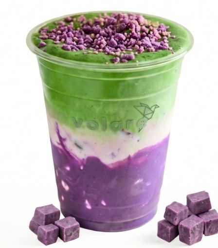
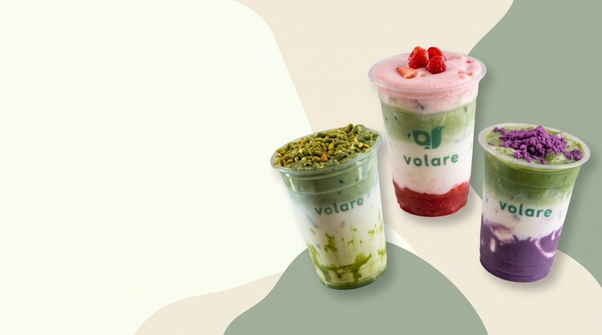
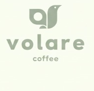
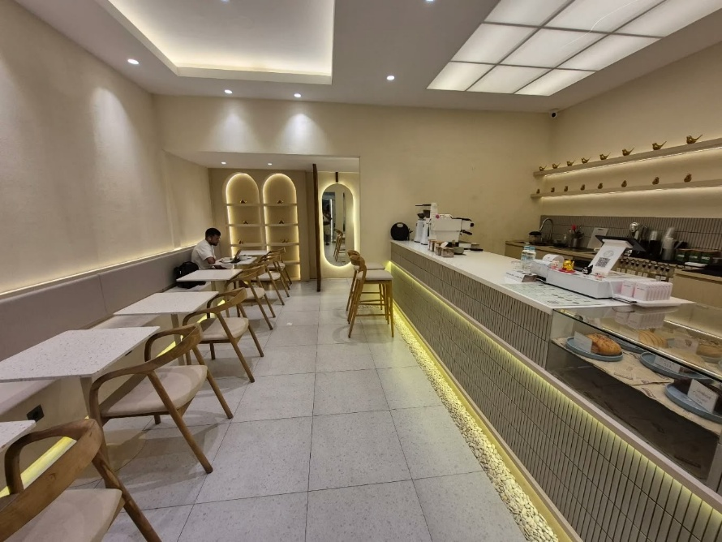
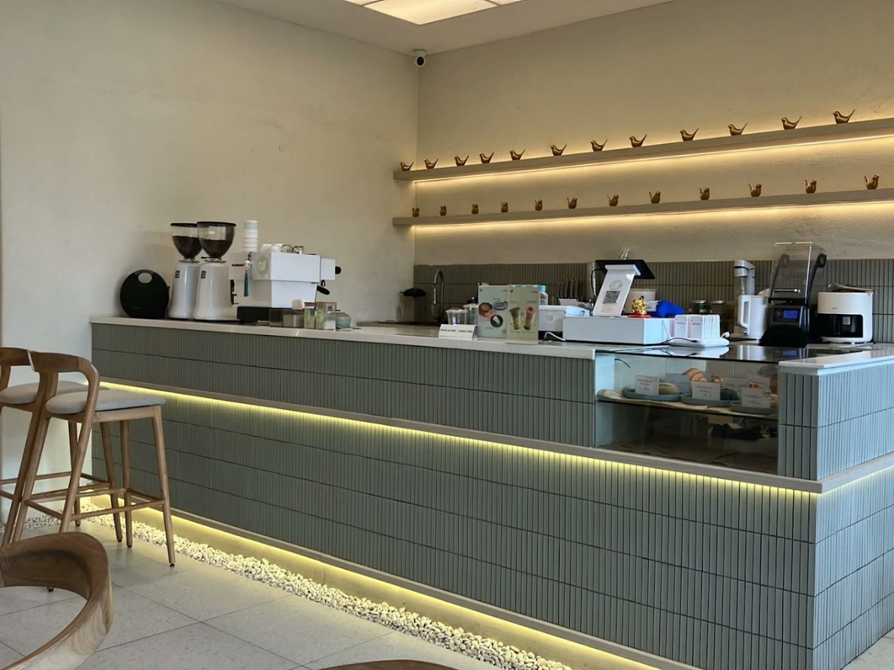
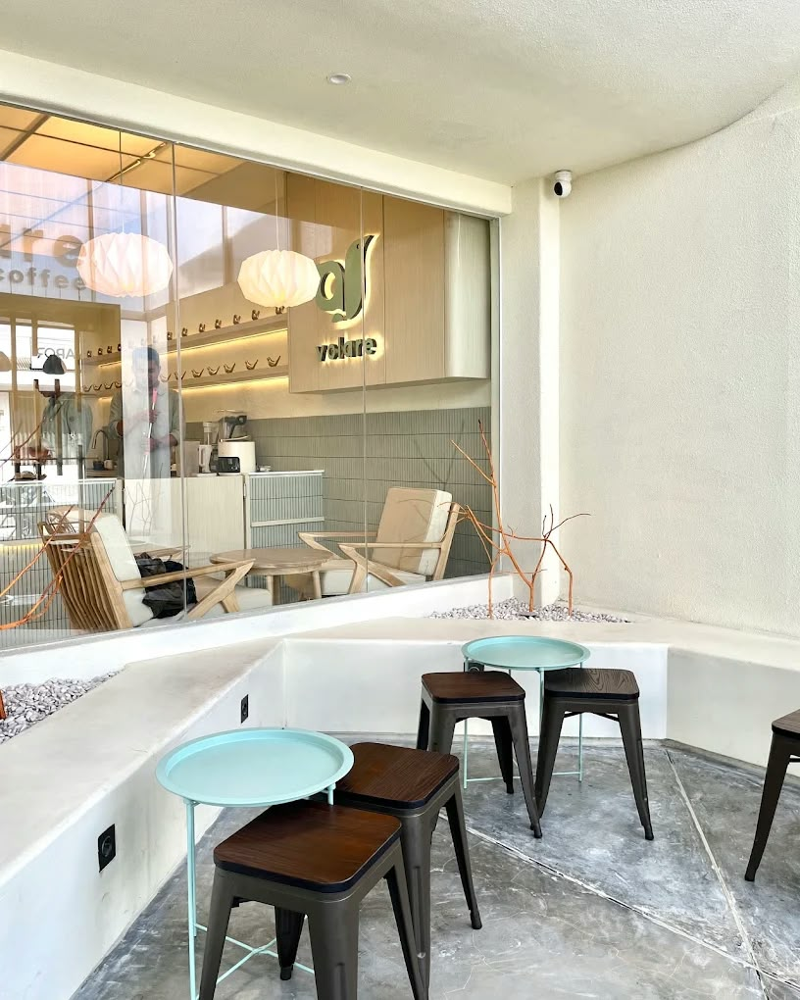
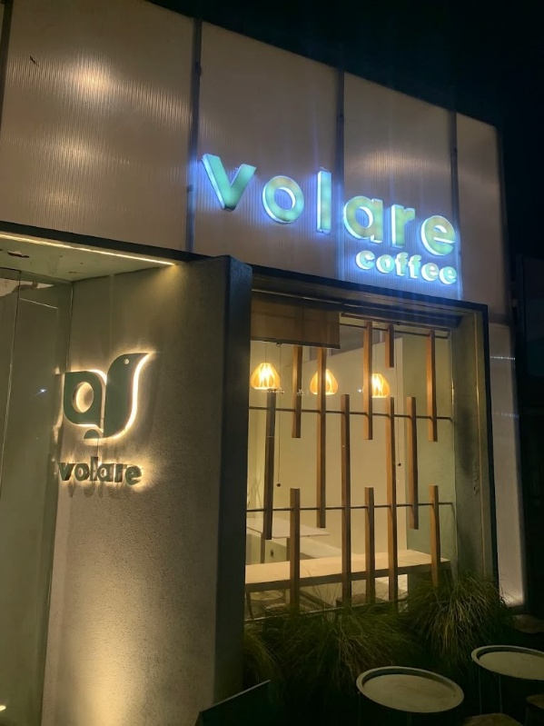
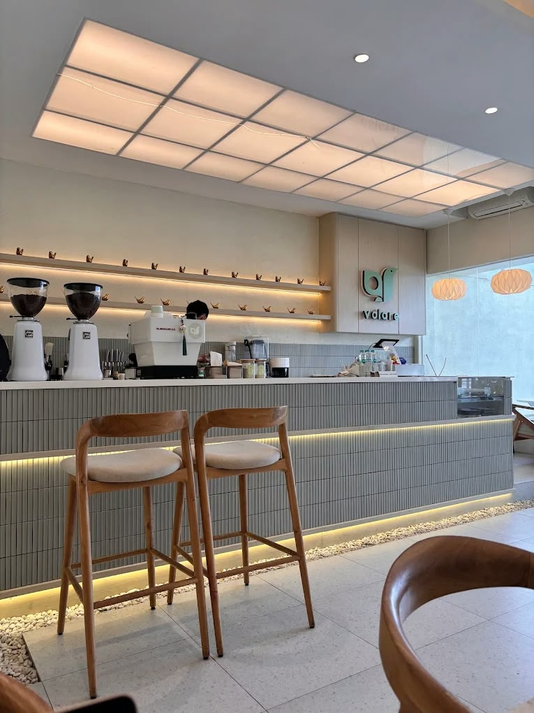
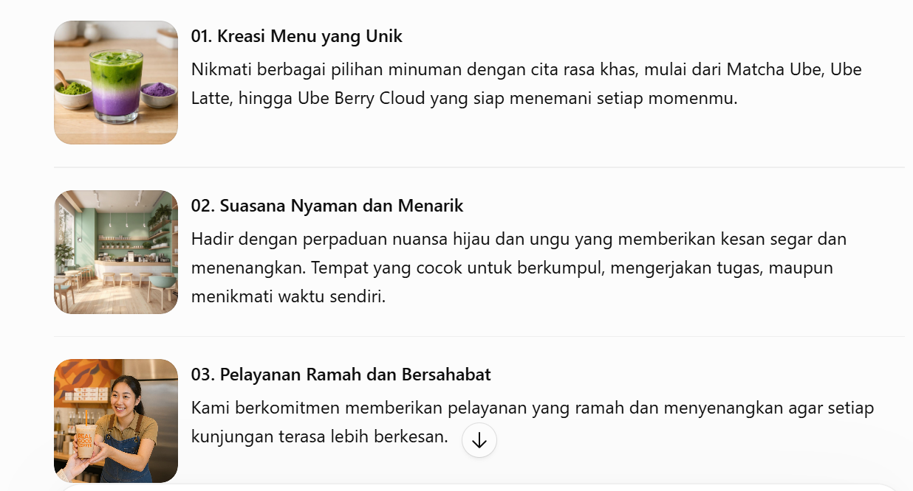

VOLARE SIGNATURE
Matcha Ube
32KRasa matcha yang earthy berpadu dengan selai ubi buatan sendiri yang lembut dan manis alami.
Sentuh untuk kembali

Lift Your Day
Kami tidak sabar untuk bertemu denganmu dan kami senang melihat setiap momen yang kamu bagikan bersama Volare.
Temukan minuman favoritmu, nikmati suasana yang nyaman, dan ciptakan momen menyenangkan bersama orang-orang tersayang.
Jelajahi MenuDidirikan di Yogyakarta, Volare Coffee hadir sebagai tempat bagi siapa saja yang ingin menikmati waktu dengan cara yang lebih menyenangkan. Berawal dari kecintaan terhadap kopi, matcha, dan kreasi minuman yang unik, Volare ingin menghadirkan pengalaman menikmati minuman yang bukan hanya tentang rasa, tetapi juga tentang suasana dan cerita di balik setiap kunjungan.
Dengan perpaduan suasana yang nyaman, pilihan minuman yang menarik, serta sentuhan warna hijau dan ungu yang menjadi identitas kami, Volare Coffee menjadi tempat untuk beristirahat sejenak dari kesibukan, bertemu teman, menyelesaikan pekerjaan, atau sekadar menikmati waktu sendiri.
Karena setiap momen sederhana layak ditemani dengan minuman yang istimewa.
"Selamat datang di Volare Coffee, tempat setiap tegukan mampu membangkitkan semangat harimu."



Dari espresso racikan barista, mocktail segar, aneka latte, matcha series, hingga smoothies bowl yang menyehatkan.
Setiap minuman didukung tim yang menjaga stok, keuangan, dan layanan di kafe.
Memimpin kegiatan operasional dan menentukan arah pengembangan Volare Coffee.
Mengelola persediaan bahan baku, memeriksa stok, dan memastikan kebutuhan operasional tersedia.
Mengelola pemasukan, pengeluaran, pencatatan transaksi, dan laporan keuangan.
Menyiapkan minuman, menjaga kualitas produk, dan melayani pelanggan.
Tiga pilar yang selalu kami jaga untuk memastikan setiap momen kunjunganmu terasa istimewa.
Nikmati berbagai pilihan minuman dengan cita rasa khas, mulai dari Matcha Ube, Ube Latte, hingga Ube Berry Cloud yang siap menemani setiap momenmu.
Hadir dengan perpaduan nuansa hijau dan ungu yang memberikan kesan segar dan menenangkan. Tempat yang cocok untuk berkumpul, mengerjakan tugas, maupun menikmati waktu sendiri.
Kami berkomitmen memberikan pelayanan yang ramah dan menyenangkan agar setiap kunjungan terasa lebih berkesan. Senyum hangat barista siap menyambut harimu.
Lihat suasana Volare Coffee dan cerita dari pengunjung kami.



Hal-hal kecil yang membuat setiap kunjungan terasa istimewa. Setiap kunjungan punya cerita, setiap tegukan punya kesan.
Geser ke kiri untuk membaca ulasan lainnya
01. Suasana yang Bikin Betah
"Awalnya tahu Volare dari rekomendasi teman book club, ternyata tempatnya senyaman itu! Matcha-nya enak, tersedia area smoking, dan bagian dalam kafenya adem banget buat ngerjain tugas. Toiletnya juga bersih dan wangi, jadi makin betah. Pasti bakal datang lagi!"
02. Rasa yang Selalu Juara
"Semuanya enak! Strawberry Ube dan Matcha Ube-nya benar-benar rekomendasi banget. Nggak heran kalau Volare selalu ramai. Rasanya enak, harganya terjangkau, dan suasananya juga nyaman banget. Bikin betah dan pengen balik lagi!"
03. Selalu Jadi Favorit
"Sudah berkali-kali beli dan nggak pernah mengecewakan! Matcha Volare jadi salah satu yang terbaik dari semua yang pernah aku coba. Tempatnya nyaman buat WFC, Wi-Fi lancar, musiknya nggak berisik, toiletnya bersih, dan pelayanannya ramah banget. Bakal terus jadi tempat favorit!"
Mau ngerjain tugas bareng teman, meeting santai, atau nongkrong seru? Amankan mejamu lebih dulu agar kunjunganmu makin nyaman!
Dengan melakukan reservasi terlebih dahulu, kami bisa menyiapkan meja terbaik sesuai kebutuhanmu, mulai dari stopkontak laptop yang memadai hingga spot duduk favorit.
Isi formulir di bawah ini dan kami akan segera mengonfirmasi mejamu.